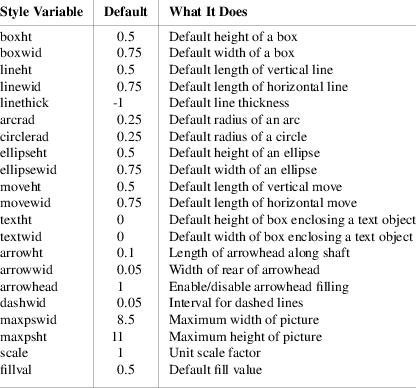
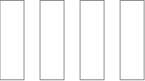

There are a number of global style variables in pic that can be used to change its overall behavior. We’ve mentioned several of them in previous sections. They’re all described here. For each variable, the default is given.

Any of these variables can be set with a simple assignment statement. For example:

Figure 12-1: boxht=1; boxwid=0.3; movewid=0.2; box; move; box; move; box; move; box;
In GNU pic, setting the scale variable re-scales all size-related state variables so that their values remain equivalent in the new units.
The command reset resets all style variables to their defaults. You can give it a list of variable names as arguments (optionally separated by commas), in which case it resets only those.
State variables retain their values across pictures until reset.